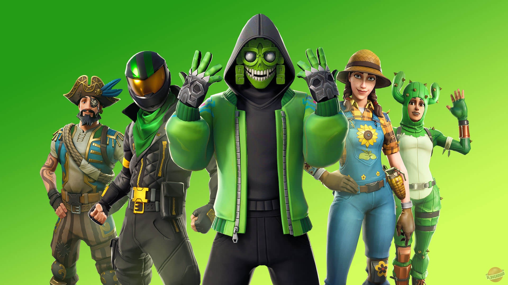

На данной странице вы найдете свежие новости по Фортнайту
Fortnite — компьютерная онлайн-игра, разработанная американской компанией Epic Games совместно с People Can Fly и выпущенная в ранний доступ в 2017 году[6]. Fortnite предлагает игрокам на выбор три раздельных режима: Fortnite: Save the World, кооперативный симулятор выживания с открытым миром, в котором игрокам предлагается сообща отбиваться от монстров, похожих на зомби, с помощью оружия и различных построек; Fortnite: Battle Royale — соревновательный режим в жанре королевской битвы, в котором 100 игроков должны сражаться друг с другом, пока в живых не останется только один; и добавленный в 2018 году режим Fortnite: Creative, режим-«песочница», в котором игроки могут самостоятельно создавать различные сооружения, наподобие Minecraft. Fortnite: Save the World был выпущен на платформах Windows, macOS, PlayStation 4 и Xbox One, а Fortnite: Battle Royale и Fortnite: Creative, помимо перечисленных платформ, также и на портативных устройствах — Nintendo Switch, iOS и Android. Игра распространяется преимущественно посредством цифровой дистрибуции по модели free-to-play; изданием версий игры на физических носителях занимается компания Gearbox Publishing.
Более подробная информацияFortnite — это кооперативная песочница на выживание, основными механиками которой являются исследование, сбор ресурсов, строительство укрепленных зданий и борьба с волнами наступающих зомби. Игроки кооперируются, чтобы собирать предметы, которые они могут использовать для строительства форта днём, а ночью защищаться от зомби. Строительство является основной механикой, при этом в игре «уйма лута». Игроки могут строить и редактировать каждую стену своего форта с сеткой 3х3, строить лестницы, крышу и окна, ваяя их в соответствии с той или иной потребностью. Благодаря этим элементам геймплея основатель Epic Games Тим Суини охарактеризовал игру как «смесь Minecraft и Left 4 Dead». Местность и карта в игре генерируются случайным образом, и игрокам даётся различное оружие дальнего боя, например, дробовик или снайперская винтовка, а также холодное оружие как катана. В игре представлено четыре различных класса, а именно ниндзя, чужеземец, коммандос и строитель. Разные классы имеют разные способности. Например, строитель быстрее и дешевле строит, а также усиливает сами строения. А способности к ближнему бою намного лучше у класса ниндзя, чем у других классов. Игроки могут также разрушать объекты окружающей среды и декорации, чтобы получить ресурсы. Когда игрок разбивает что-либо, он играет в мини-игру, нужно бить в подсвечиваемые точки чтобы проходил двойной урон. Также можно создавать оружие, а навыки персонажа могут быть настроены через улучшения и повышение уровней. Различные части, такие как пол, ловушки, стены и крыша, могут быть сделаны из дерева, камня, или металла. Также представлен режим игрок против игрока (PvP), который будет вмещать до ста игроков[12].
 Разработка
Fortnite был представлен 10 декабря 2011 года компанией Epic Games. 8 апреля 2014 года, было объявлено, что игра будет бесплатной. People Can Fly (ранее известный как Epic Games Poland) также будет работать над игрой. Концепция игры появилась во время геймджема, на котором разработчики должны подготовить небольшую игру за ограниченное время.
Альфа-версия игры была анонсирована и была доступна начиная со 2 декабря до 19 декабря 2014 года. Версия для Mac была представлена на конференции WWDC 2015 8 июня 2015. Версия для OS X доступна для бета-тестирования с 2015 года. 30 июня 2020 года Epic Games объявила в блоге об окончании раннего доступа, а также об отмене планов перехода Save the World на условно-бесплатную модель.
Разработка
Fortnite был представлен 10 декабря 2011 года компанией Epic Games. 8 апреля 2014 года, было объявлено, что игра будет бесплатной. People Can Fly (ранее известный как Epic Games Poland) также будет работать над игрой. Концепция игры появилась во время геймджема, на котором разработчики должны подготовить небольшую игру за ограниченное время.
Альфа-версия игры была анонсирована и была доступна начиная со 2 декабря до 19 декабря 2014 года. Версия для Mac была представлена на конференции WWDC 2015 8 июня 2015. Версия для OS X доступна для бета-тестирования с 2015 года. 30 июня 2020 года Epic Games объявила в блоге об окончании раннего доступа, а также об отмене планов перехода Save the World на условно-бесплатную модель.
Награды
Этот раздел не завершён. Вы поможете проекту, исправив и дополнив его. В 2017 году игра была номинирована на звание «Лучшая многопользовательская игра» по версии PC Gamer[21] и на звание «Лучшая игра для зрителей» по версии IGN[22]. В 2018 году игра получила награду «Лучшая поддерживаемая игра» по версии PC Gamer и IGN. В 2019 году Fortnite получила премию BAFTA в области игр в номинации «Evolving Game»[23].
Год Награда Категория Результат Ссылки
2017 The Game Awards 2017 Лучшая многопользовательская игра Номинация
2018 The Game Awards 2018 Лучшая многопользовательская игра Победа
Лучшая мобильная игра Номинация 2019 The Game Awards 2019 Лучшая поддерживаемая игра Победа
Лучшая поддержка сообщества Номинация Лучшая киберспортивная дисциплина Номинация 2020 2020 Kids' Choice Awards Любимая видеоигра Номинация The Game Awards 2020 Лучшая поддерживаемая игра Номинация Лучшая поддержка сообщества Номинаци Лучшая киберспортивная дисциплина Номинация 2021 2021 Kids' Choice Awards Любимая видеоигра Номинация Продажи и суд с Apple Основная статья: Epic Games vs. Apple 26 июля 2017 года было анонсировано, что уже продано более 500 000 предзаказов игры. 18 августа 2017 года Epic подтвердили, что количество игроков в Fortnite достигло более миллиона человек
В сентябре 2018 года разработчики из Epic Games сообщили, что в игру Fortnite ежемесячно играет 78,3 млн человек.
13 августа 2020 года Fortnite удалили из App Store и Google Play[4], после того как Epic Games нарушила правила этих площадок дистрибуции и добавила возможность прямых внутриигровых покупок, в обход официальных платежных систем Apple Pay и Google Pay. Epic Games, а также другие разработчики неоднократно возмущались 30-процентными сборами, которые Apple и Google берут со всех приложений, размещенных в App Store и Google Play. 14 августа Epic Games подала в суд на Apple и Google с целью обжаловать это решение[37]. 28 августа 2020 года аккаунт разработчиков, а также все разработанные ими игры были удалены из App Store[38].
Комментарии 13 августа 2020 года Fortnite удалили из магазинов AppStore и Google Play из-за функции прямых платежей[4]. Клиент для macOS хотя и может быть загружен, но не сможет быть обновлён. См. дело Epic Games против Apple. Игра остаётся доступной, если пользователь уже загрузил её на устройство. На Android, несмотря на то, что игра больше не доступна в Google Play, она по-прежнему присутствует в магазине Samsung Galaxy Store на устройствах Samsung Galaxy, а также непосредственно через приложение Epic Games App на всех других устройствах Android.
Картинка с game awards 2019 Факты S.T.A.L.K.E.R